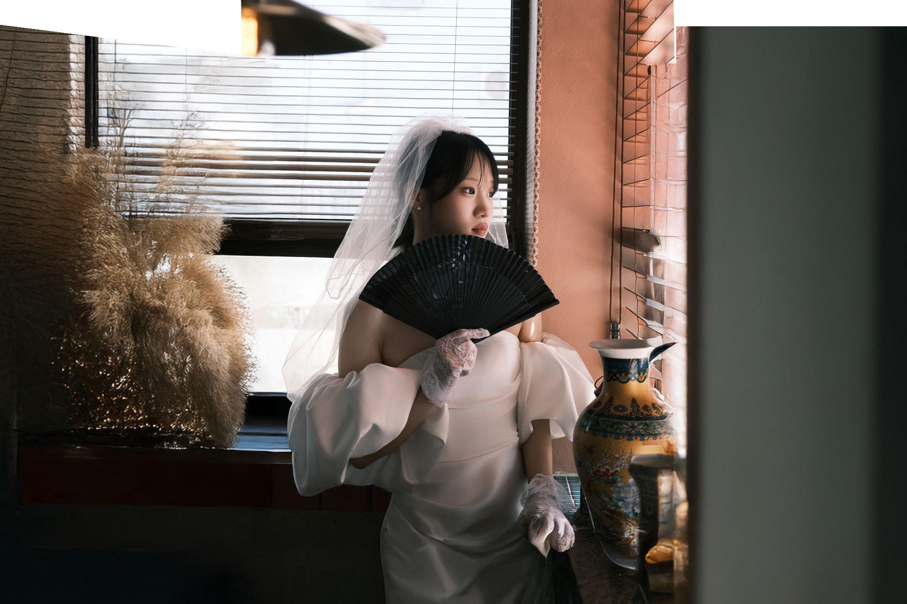

02 / 03THE PROJECT
상상을 이미지로,
감각을 비주얼로.
모델 프로필 촬영부터 제품 이미지, AI 기반 비주얼 콘텐츠까지 다양한 방식으로 이미지를 제작했습니다. 피사체의 특징과 제품의 가치를 효과적으로 전달할 수 있도록 구도와 색감, 디테일을 고려하고, 촬영과 디지털 기술을 결합해 감각적이고 완성도 높은 비주얼을 구현했습니다.
YEAR2025
SCOPEFashion · Editorial
TOOLSCHAT-GPT · Evoto · Lightroom · Web
SELECTED FRAMES
이미지를 선택하면 크게 볼 수 있습니다.
MY CONTRIBUTION
좋은 장면은
정확한 시선에서.
01디렉션 · 디자인100%
02촬영100%
03AI 사용도100%
프로젝트 내용과 기여도는 포트폴리오 구성용 예시입니다. 실제 작업 범위와 결과로 바꿔주세요.